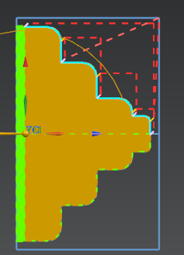
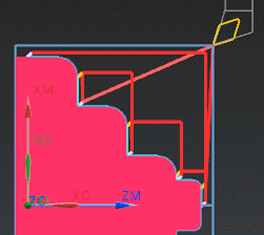

Machine diameters first, faces second, and fillets last
-
In the Path Settings group, from the Cut Fillets list, select With Diameters.
-
Generate
 the tool path.
the tool path.

-
Verify
 and view the tool path as you did before.
and view the tool path as you did before.

The fillets are cut when the adjacent diameters are cut because the cut strategy is set to Diameters First, Then Faces and the Cut Fillets option is set to With Diameters.
-
Click OK to complete the tool path visualization.
The Finish Turn OD dialog box is displayed.